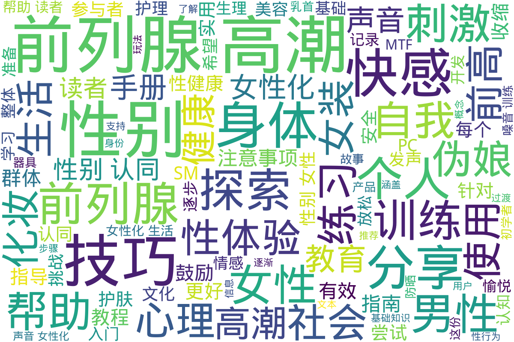

生活与性体验
Info
该目录包含关于生活与性体验的多个文件，旨在为跨性别者提供实用的知识与技能，促进性健康与身体认知。文件内容涵盖了肌肉控制、性愉悦技巧、身体认知、心理适应等方面。具体来说，包括PC肌的收缩分解、如何进行会阴按摩、乳首的开发技巧以及伪声与伪娘训练的方法。这些内容不仅帮助跨性别者了解和掌控自己的身体，还提供了一系列实践指导，旨在支持他们的生活质量与性体验。其中还涉及如何理解和参与性愉悦的多样性实践，秉持对个人身体和性别身份的尊重与认同。
📊 统计信息
总计内容：192 篇
标签：生活体验 性体验 跨性别支持 身体认知 性健康 技巧指导 自我探索 心理适应
📄 文档
| 标题 ▲ | 年份 ▼ | 摘要 |
|---|---|---|
| PC肌收缩分解教程 | None | 展开
该文件是关于PC肌收缩分解教程的PDF文档，针对盆底肌肉的锻炼提供了详细的说明和训练计划。文件首先分析了PC肌的解剖结构与功能，指出PC肌在性功能中的重要性，并介绍了BC肌和IC肌这两个相对较少被提及的肌肉。接着，文件详细阐述了不同阶段的训练计划，包括从入门到高级的多种分解练习，旨在提升盆底肌的灵活性、持久性和力量，最终改善性功能。
文中排除了许多误导信息，鼓励读者采取科学有效的锻炼方法，并强调训练过程的重要性，同时对每个阶段的要求和目标进行了清晰的说明。不同等级的训练计划包含了具体的练习数量和注意事项，帮助练习者逐渐掌握肌肉的控制能力。整篇文档不仅适合想要改善性功能的人群，也展示了对盆底肌肉研究的严谨态度和科学基础。
年份：None 收录日期：2024-12-13 05:32:01 |
| SM_手册_我的身体我的心 | 2010 | 展开
本文件为《我的身体，我的心》的翻译版本，内容主要讨论了SM（施虐与受虐）文化的基础知识及其在情侣关系中的应用。文件由一位热爱SM文化的翻译者根据原版进行翻译，旨在为初学者提供一个相对易懂的SM指南。内容涵盖了SM的定义、目的、规则、以及具体的玩法和注意事项等。翻译者提到，SM并不仅仅是冷冰冰的施虐行为，而是建立在双方相互爱护和理解的基础之上。尤其强调了在SM过程中保护对方安全、心理感受的重要性，同时也提醒初学者应注意可能的危险和过于激烈的行为带来的后果。文本中详细介绍了轻度SM的各种方法，包括语言虐待、轻度束缚、遮眼睛等，并指导如何创造有利于双方都能接受的氛围。同时，其中包含了对于SM社会认知的探讨，反映了人们对于这种行为的多元态度与看法。整体文件不仅提供了丰富的实操技巧，也传达了对情感和信任建立的重视。
年份：2010 收录日期：2024-12-13 05:32:01 |
| 会阴按摩与正确的认知方法 | None | 展开
该文件标题为《会阴按摩与正确的认知方法》，是一份针对会阴按摩及其相关性体验的指导文档，主要提供了一系列关于如何进行会阴按摩的详细步骤和技巧。文中首先强调了进行此类按摩所需的心理状态与环境准备，指出需要在足够放松和刺激的氛围中进行操作，以便提升体验的快感。文中逐步引导读者如何进行会阴部位的触碰和按摩，并详细描述了在此过程中可能获得的不同类型的快感，如前列腺高潮的概念以及对此感受的引导。
文件还提供了多条分支情况，描述在不同情况下的体验和感受，包括在高潮中的继续刺激和余韵的感受等，进而交代如何提高敏感度与兴奋度的关系。支持性地进行的是，文中对身体的认知与心理准备给予了充分重视，帮助读者建立起完整的认知框架，以实现更好的性体验和解放自我。整体而言，此文件为广大跨性别及性少数群体提供了有价值的性知识和生活技巧。
年份：None 收录日期：2024-12-13 05:32:01 |
| 变性后欲望唤起 | 2008 | 展开
本文详细讨论了变性手术后女性在性欲、性唤起及性高潮方面的经历与变化。作者通过剖析社会对变性手术的误解，例如认为变性手术后会导致完全失去性感，指出这一观念的不准确，并强调术后女性如何通过自我探索和实践，重新获得性快感与性满足。随着性唤起的恢复，变性女性在性体验上会经历重新的青春期式状态，这种转变需要时间和耐心。文章也探讨了如何在性伴侣关系中保持良好的沟通，以实现双方的性满足，并提供了一些有效的体位建议，以帮助术后变性女人更容易达到高潮。同时，文中提及了术后女性相比于男性在性反应上的一种更为内在和细腻的体验，强调情感和身体的结合对满足的影响。最后，作者鼓励变性女性在与伴侣的性关系中应摆脱对于外部评价的担忧，享受自我身份的肯定和欢愉。
年份：2008 收录日期：2024-12-13 05:32:01 |
📁 子目录
| 目录名 ▲ | 文件数量 ▲ | 简介 |
|---|---|---|
| 乳首开发 | 2 篇 | 展开
该目录涉及“乳首开发”主题，为跨性别人士提供相关的介绍和指导。内容包括专门为蓝孩纸（即跨性别男性或非二元性别者）编写的乳首开发手册，旨在帮助那些希望通过乳首开发来增强自身形象认同的人士。手册中可能包含实用的建议、经验分享、各类技术和方法等信息，帮助使用者理解乳首开发的过程及注意事项。这一资料旨在支持和引导跨性别人群探索自我认同，改善自我身体形象，并促进他们对生理变化的理解。
文件数量：2 篇 |
| 伪声 | 81 篇 | 展开
本目录‘伪声’集中在跨性别女性（MTF）声音的女性化及其教学资源。目录中包含了多份有关如何调整和改善声音的手册与指南。这些资料为跨性别女性提供了关于声音女性化的具体方法和实践技巧，帮助她们在转变过程中更自信地表达自己的性别身份。‘MTF声音女性化手册’详细介绍了发音技巧、语调调整以及如何在讲话时营造女性化的声音特质；‘伪声基础整理以及教学’则提供了一些基本练习和建议，适合初学者使用；而‘成为女孩子的声音’则探讨了在声音女性化过程中可能遇到的心理与情感挑战，鼓励跨性别女性积极面对这些变化。整体来看，这个目录为希望进行声音女性化的跨性别者提供了宝贵的实用信息和经验分享，是一个重要的资源集合。
文件数量：81 篇 |
| 伪娘教程或训练 | 6 篇 | 展开
该目录专注于伪娘的自我调教与训练，包含多个教程和指导手册，旨在帮助希望进行性别表达转变的个人理解和实施伪娘的生活方式。文献包括‘伪娘的一年自我调教任务’和‘伪娘的一年训练’，它们详细介绍了在一年内开展的系统训练内容和步骤，结合实际经验分享增添了可操作性。‘好想做个女孩子-伪娘养成手册’和‘真正的伪娘开发教程哦’则更多地从理论和实践层面为读者提供了伪娘身份认同的发展建议。而‘荡妇学院’则可能涉及社会文化对伪娘这种身份的认知与挑战。这些资源对于希望更深入了解伪娘文化，进行自我定位和定制训练计划的人群尤为重要。
文件数量：6 篇 |
| 前列腺高潮 | 79 篇 | 展开
此目录专注于探索前列腺高潮的相关主题，涵盖了各种与前列腺刺激和高潮体验相关的知识和分享。内容包括前列腺高潮的基本概念、入门指南、使用工具、以及男人在前列腺高潮方面的不同体验和境界。目录中包含了多篇经验分享和教程，帮助新手深入了解如何实现前列腺高潮及其所带来的独特快感。目录还提供了一些先进的前列腺高潮技术和方法，以及许多个人的实践经验。这些资料不仅为新手提供了系统的教育，也为有经验的玩家提供了更高阶的技巧和建议，促进了对这一主题的理解和接受。在这个领域中，前列腺高潮被视为一种独特的生活体验，它在性健康和性快乐方面，拥有重要的地位和意义。
文件数量：79 篇 |
| 女性化生活 | 9 篇 | 展开
该目录专注于女性化生活的各个方面，提供了在生活和性体验中提升个人形象的实用课程和技巧。文件中包括了多节课程内容，帮助从妆容到护肤，全面提升女性自我表现。具体内容包括：第一节课提到的“不要‘白洗’，只要‘洗白白’”强调了均匀肤色的重要性；第三课讨论了深度保湿及其对水润肌肤的关键作用；第四节课则教授有效的防晒方法，避免肌肤受到紫外线的损害。化妆入门课程的系统讲解，对于初学者尤为重要，让大家能够掌握基础的化妆技巧。书籍《女神进化论》鼓励女性追求自我成长，开启跨越式的蜕变之路，适合每位不甘平庸的女性。该目录的最后几节课则聚焦于日常护肤小窍门，如告别“熊猫眼”和“鱼尾纹”，致力于帮助女性恢复年轻活力。
文件数量：9 篇 |
| 如何玩弄男娘 | 4 篇 | 展开
本目录包含与男娘（女装男子）相关的性体验和社交互动的探讨和记录。内容涵盖了一些实际的生活技能和娱乐方式，以助于人们更好地理解和参与这一亚文化。在‘如何玩弄男娘’的文件中，提供了多个有趣的讨论和建议，探索如何在日常生活中融入男娘文化。目录中还包含男娘的推特记录及聊天记录，展示了男娘社区的交互方式和生活点滴。这些文件为想要了解或参与到男娘生活中的人们提供了视角和经验。
文件数量：4 篇 |
| 详细的灌肠方法 | 4 篇 | 展开
本目录收录的是关于灌肠方法的详细说明和技巧，主要针对希望了解或尝试灌肠的人士。文件中包含了多种灌肠方法的步骤描述，适用者群体以及可能需要注意的事项。文章具体讲解了不同灌肠工具的使用方法，以及在使用过程中的注意事项，例如卫生、剂量和水温等。这些内容对于跨性别人士在进行相关身体护理时具有重要参考价值，尤其是在过渡期间关注身体健康和生理需求的情况下。
文件数量：4 篇 |
| 隐藏男性生殖器 | 3 篇 | 展开
该目录涵盖了隐藏男性生殖器的一系列资源与教程，主要集中在性别表达和生活体验的实践方面。文件中包含压枪教程及其详细步骤，为需要进行身体性别表达调整的跨性别者提供实际的帮助与指导。这类教程对于那些希望通过非手术方式达到身体表达效果的人尤为重要，内容涉及如何选择合适的材料和技巧，确保使用过程的安全和舒适。通过这些资源，跨性别者能够更好地理解和调整自身的性别表现，以提升生活质量和心理健康。
文件数量：3 篇 |
📊 词云图

- 1,236 访问 压枪详细教程
自动生成说明
目录及摘要为自动生成，仅供索引和参考，请修改 .github/ 目录下的对应脚本、模板或对应文件以更正。